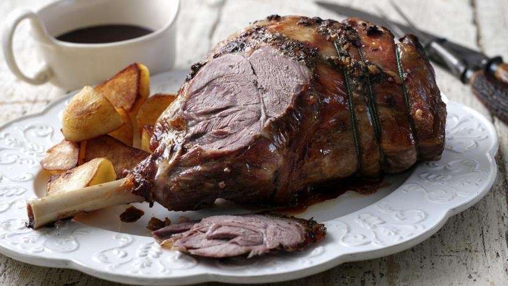

4oz grated cheese
3 tablespoons milk
1oz butter
Pepper and salt
Slice of toast per person
Serves 1-2
Place the cheese and milk in a sucepan and melt slowly.
Add pepper, salt and butter.
When piping hot, pour it over the toast and brown under the grill.
Serve wih a glass of beer, and enjoy.
* * * * * * * * * * * * * * * * * * *
1 leg of lamb, bone-in
Seasoning
Serves 5-6
Heat oven to 180°C.
Sprinkle the meat with seasoning.
Place the meat in a roasting tin.
Roast it for 30 minutes per 1lb of meat
Let the meat rest for 15 minutes before carving and serving with seasonal vegetables
* * * * * * * * * * * * * * * * * * *
Welsh butter
1½lb bone-in lamb neck, weighed with bone in
Sea salt and freshly ground pepper
2 large potatoes
2 carrots
2 parsnips
2 small turnips
1 small swede
2 leeks, thinly sliced
A few sprigs of thyme or parsley
Serves 5-6
Peel and cube all the root vegetables
Heat the butter in a large pan and brown the lamb on all sides.
Add 2 litres of water and bring to a simmer.
Add all root vegetables and simmer uncovered for 2-3 hours until the meat is so tender it falls apart.
Add the leeks and simmer for 20 minutes more.
Take out the meat, shred the meat off the bones and return the meat to the pan. Discard the bones.
Divide the cawl between bowls.
Chop the fresh thyme or parsley and sprinkle on the cawl
Serve with bread and either Caerphilly or Cheddar.
* * * * * * * * * * * * * * * * * * *